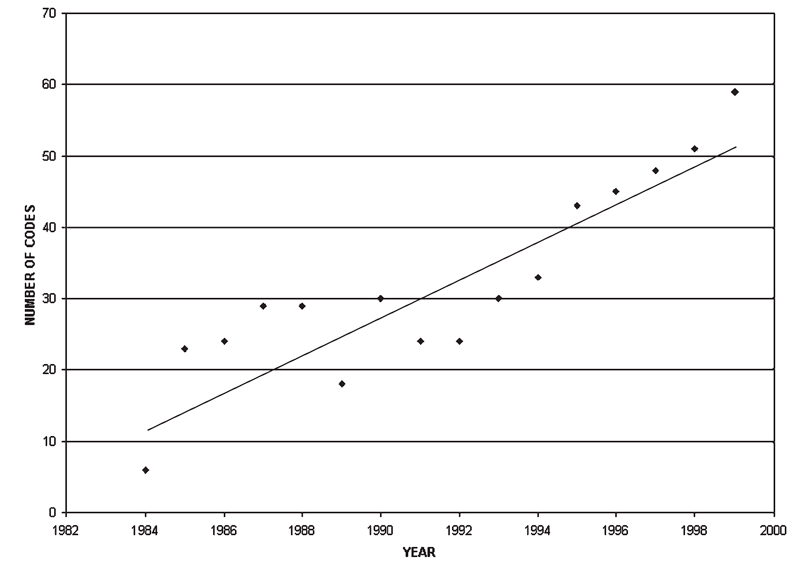

Publicado el 18 de marzo de 2015 a las 11:00
Aquí transcribo un extracto del primer capitulo del libro El desarrrollo del Análisis de Redes Sociales de Linton Freeman (2012). Este capitulo hace una breve caracterización de lo que es el Análisis de Redes Sociales.
En 1968, Allen Barton, sociólogo de la Universidad de Columbia, describió la estrategia dominante de la investigación en ciencias sociales de la siguiente manera:
Durante los últimos treinta años, la investigación social empírica ha estado dominada por la técnica de encuestas por muestreo. Pero esta práctica de usar muestras aleatorias equivale a pasar a los individuos a través de un molino de carne; los arranca de su contexto social a la vez que garantiza que ninguno de ellos interactúe con ninguno otro de la muestra. Es como si un biólogo colocara a sus animales de laboratorio en una máquina de hacer hamburguesas y observara hasta la mínima célula de ellos a través del microscopio: La anatomía y la fisiología se desvanecen, la estructura y la función desaparecen, y el estudio se queda en el nivel de la biología celular… Si nuestro objetivo es entender el comportamiento humano más que sólo describirlo, tenemos que saber acerca de grupos primarios, vecindarios, organizaciones, círculos sociales y comunidades; acerca de interacción, comunicación, expectativas de rol y control social.
La afirmación de Barton fue verdadera entonces y lo sigue siendo hoy día. La mayoría de la investigación social estaba y está centrada exclusivamente en el comportamiento de los individuos, pero deja de lado la parte social del comportamiento; la parte que se refiere a la manera en que los individuos interactúan y ejercen influencia unos sobre otros.
Afortunadamente para todos los que nos resistimos a estudiar el mundo social como si fuera carne de hamburguesa, hay, y siempre habido, una alternativa. Algunas investigaciones sociales han centrado su atención de manera consistente en las relaciones sociales que ligan a individuos, más que en los individuos mismos. Este tipo de investigación que estudia lazos entre objetos es llamada estructural.
El enfoque estructural no se limita al estudio de relaciones sociales humanas y está presente en casi todos los campos de la ciencia. Por ejemplo, los astrofísicos estudian la fuerza de atracción mutua de los planetas del sistema solar para explicar sus órbitas; los químicos moleculares examinan la manera en que diferentes tipos de átomos interactúan para formar distintos tipos de moléculas; los ingenieros eléctricos observan cómo las interacciones entre varios componentes electrónicos—como condensadores y resistencias—afectan el flujo de corriente en un circuito, y los biólogos estudian las maneras en que cada especie de un ecosistema interactúa con otras y las afecta
En ciencias sociales, el enfoque estructural basado en el estudio de la interacción entre actores sociales es llamado análisis de redes sociales. Las relaciones que este enfoque estudia son por lo general aquéllas que ligan a individuos humanos, aunque también puede tratarse de relaciones entre individuos no humanos, como las hormigas, las abejas, los venados, las jirafas o los simios. O también pueden ser lazos entre actores que no son individuos—los analistas de redes a menudo estudian lazos entre grupos y aún entre estados-nación y organizaciones internacionales.
El enfoque de redes sociales parte de la noción intuitiva de que la trama de los lazos sociales en que los actores existen tiene consecuencias sociales importantes. Entonces, los analistas de redes buscan descubrir varios tipos de entramado para tratar de determinar las condiciones bajo las cuales éstos emergen y descubrir sus consecuencias.
La idea de que vale la pena estudiar patrones de lazos sociales es probablemente muy antigua. Por ejemplo, en la Biblia se recalca la importancia de las genealogías, y los nobles hawaianos tenían que memorizar docenas de nombres de generaciones de ancestros como parte de su educación.
Antes de que apareciera el análisis de redes sociales contemporáneo, los investigadores solían echar mano de al menos una de las cuatro estrategias comunes para lidiar con hechos sociales de carácter estructural. Algunos de estos estudiosos aclararon y extendieron la intuición estructural de base; otros recolectaron información detallada de actor-por-actor para hacer examen sistemático de patrones sociales; otros más desarrollaron procedimientos para producir esquemas visuales de entramados de lazos, y aún otros se dieron a la tarea de traducir a lenguaje matemático y computacional las propiedades de tales patrones. Pero es sólo recientemente que estas cuatro estrategias fueron integradas en un paradigma organizado de investigación; las cuatro se han convertido en características fundamentales del análisis de redes sociales y en su conjunto definen a este campo:
Más allá del uso de estas cuatro estrategias, los analistas de redes sociales contemporáneos reconocen que existe un amplio rango de hechos empíricos que pueden ser explorados a través de sus patrones estructurales. Pero llegar a reconocer este hecho ha sido un proceso difícil. En una entrevista, en 1986, el antropólogo Clyde Mitchell describió su propia experiencia de cuando finalmente cayó en la cuenta de la gran utilidad del enfoque analítico de redes. Todo comenzó en los años cincuenta, cuando Mitchell participaba regularmente en el seminario de Max Gluckman, en la Universidad de Manchester. Varios de los participantes del seminario habían hecho investigación social usando enfoques estructurales, pero en ese momento Mitchell no pudo ver lo que todos esos estudios tenían en común ni su potencial de generalización, sino hasta unos años más tarde, a principios de los sesenta, cuando dirigía varios proyectos de investigación etnográfica de campo en Zimbabwe (Mitchell 1969). Entre los investigadores participantes estaban David Boswell, Peter Harries-Jones, Bruce Kapferer y Pru Wheeldon. Boswell estaba recolectando información sobre crisis personal y apoyo social; Harries-Jones se interesaba en la importancia del tribalismo en la organización política; Kapferer estudiaba el conflicto laboral en una compañía minera, y Wheeldon examinaba la emergencia de procesos políticos en una comunidad inter-étnica. A simple vista se trataba de cuatro proyectos de investigación independientes, pero de pronto Mitchell vislumbró un patrón común entre ellos:
. . . fue entonces que me di cuenta de que necesitábamos un método formal para hacer los cuatro análisis. Había estado leyendo la revista ‘Sociometría’, así es que estaba yo familiarizado con ciertos procedimientos que, desde luego, no conocía a fondo. Y fue entonces que Doc Cartwright y Frank Harary publicaron su libro (Harary, Norman and Cartwright 1965) y que me dediqué a estudiarlos.
Una vez que la comunidad de investigadores en redes sociales reconoció el poder de generalización del enfoque estructural, éste comenzó a ser aplicado en una amplia variedad de estudios empíricos. Tal y como lo indiqué en la sección que escribí para la Enciclopedia de Psicología (Freeman 2000a), el análisis de redes ha contribuido a desarrollar importantes aplicaciones de investigación en los siguientes tópicos:
. . . el estudio de la movilidad ocupacional, el impacto de la urbanización en los individuos, el mundo político y el sistema económico, la toma de decisiones comunitaria, el apoyo social, la comunidad, la resolución de problemas grupales, la difusión, el entrelazamiento de corporaciones, los sistemas de creencias, la cognición social, los mercados, la sociología de la ciencia, las relaciones de intercambio y poder, el consenso y la influencia social, la formación de coaliciones… estudios sobre comportamiento de primates, comunicación por computadora, estudios intra e interinstitucionales, estudios de marketing… difusión de enfermedades; el SIDA en particular.
El cada vez más creciente rango de aplicaciones del análisis de redes sociales queda demostrado en un estudio de Otte y Rousseau (2002), quienes examinaron artículos de redes sociales publicados entre 1984 y 1999. La figura 1.1 muestra que año con año ha habido un aumento casi lineal del número de áreas sustantivas en las que el análisis de redes sociales ha sido aplicado.
En efecto, el análisis de redes sociales no solamente queda definido por las cuatro características mencionadas arriba, sino también por su creciente gran rango de aplicaciones. Sus practicantes concuerdan en reconocerlo como un paradigma estructural. Dado su poder de generalización el análisis de redes traspasa los límites de disciplinas tradicionales; es el punto de encuentro de sociólogos antropólogos, matemáticos, economistas, politólogos, psicólogos, comunicólogos, estadísticos, etólogos, epidemiólogos, cibernéticos, especialistas del comportamiento organizacional y del mercado, expertos del mundo de los negocios y, recientemente, físicos. Todos estos estudiosos tienen antecedentes diversos y no obstante comparten su dedicación a la perspectiva estructural propia del enfoque de redes sociales, y lo demuestran en la acumulación sistemática de conocimiento en este campo.
El análisis de redes sociales es una de las contadas áreas de las ciencias sociales en la que los investigadores se influencian mutuamente de tal manera que trabajan en conjunto para producir un cuerpo acumulativo de conocimiento. Ciertamente, después de observar el patrón de citaciones entre autores, Hummon y Carley (1993) afirmaron que el análisis de redes sociales ha alcanzado el rango de ‘ciencia normal’, según la definición de Thomas Kuhn (1962), quien llamó ‘normal’ a un paradigma científico si y sólo si muestra un enfoque sistemático capaz no solamente de generar problemas de investigación sino también de resolverlos. Puesto que la ciencia normal es el producto de una secuencia ordenada de descubrimientos, el conocimiento resultante es acumulativo.